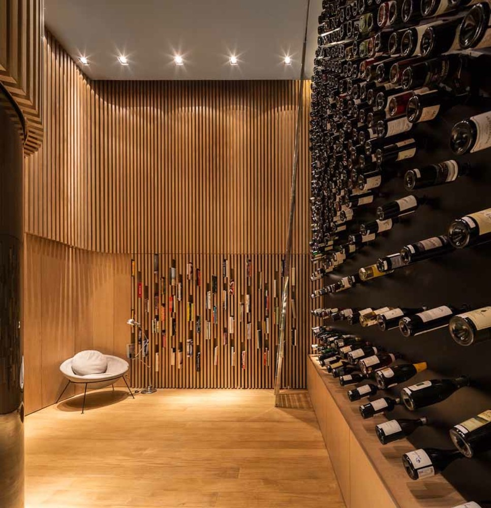

Se você está começando no mundo dos vinhos, este guia vai te ajudar a entender o básico e escolher melhor suas bebidas.

Mais encorpado e com sabor mais forte. Ideal para carnes vermelhas.
Mais leve e refrescante. Combina com peixes e dias quentes.
Equilibrado, leve e fácil de beber. Ótimo para iniciantes.
Possui gás e é muito usado em comemorações.
Experimente diferentes tipos e descubra o que você mais gosta. Não precisa gastar muito para encontrar um bom vinho.